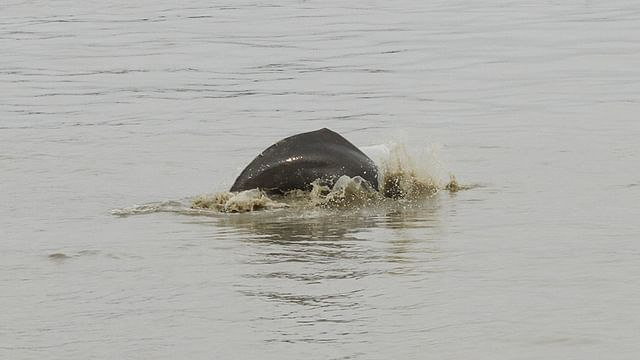

হালদার গাঙ্গেয় ডলফিন ও চার প্রজাতির মাছের জীবনরহস্য উন্মোচন
হালদা নদীর কার্প বা রুইজাতীয় চার প্রজাতির মাছ ও গাঙ্গেয় ডলফিনের জীবনরহস্য উন্মোচন (জিনোম সিকোয়েন্স) করেছেন বাংলাদেশের একদল গবেষক। দেশের কার্প জাতীয় মাছের সবচেয়ে বড় প্রাকৃতিক প্রজননকেন্দ্র হিসেবে পরিচিত এই নদীর রুই, কাতলা, মৃগেল ও কালবাউশ যেমন দ্রুত বাড়ে, স্বাদেও তেমনি অতুলনীয়। জীবনরহস্য উন্মোচনের ফলে এই মাছগুলোর ‘বিশেষত্বের’ দিকগুলো
হালদা নদীর কার্প বা রুইজাতীয় চার প্রজাতির মাছ ও গাঙ্গেয় ডলফিনের জীবনরহস্য উন্মোচন (জিনোম সিকোয়েন্স) করেছেন বাংলাদেশের একদল গবেষক। দেশের কার্প জাতীয় মাছের সবচেয়ে বড় প্রাকৃতিক প্রজননকেন্দ্র হিসেবে পরিচিত এই নদীর রুই, কাতলা, মৃগেল ও কালবাউশ যেমন দ্রুত বাড়ে, স্বাদেও তেমনি অতুলনীয়। জীবনরহস্য উন্মোচনের ফলে এই মাছগুলোর ‘বিশেষত্বের’ দিকগুলো
জানা সম্ভব হবে। গাঙ্গেয় ডলফিনসহ মৃগেল ও কালবাউশের জীবনরহস্য উন্মোচন এটাই প্রথম।
এ গবেষণায় নেতৃত্ব দিয়েছেন চট্টগ্রাম বিশ্ববিদ্যালয়ের হালদা রিভার রিসার্চ ল্যাবরেটরির প্রধান অধ্যাপক মনজুরুল কিবরিয়া ও চট্টগ্রাম ভেটেরিনারি ও অ্যানিমেল সায়েন্সেস বিশ্ববিদ্যালয়ের অধ্যাপক এ এম জে জোনায়েদ সিদ্দিকী।
বিজ্ঞাপন
বিশ্বের জিনোম সিকোয়েন্সবিষয়ক তথ্যভান্ডার হিসেবে স্বীকৃত যুক্তরাষ্ট্রভিত্তিক সংস্থা এনসিবিআইতে (ন্যাশনাল সেন্টার ফর বায়োটেকনোলজি ইনফরমেশন) এ গবেষণার ফল জমা দেওয়া হয়েছে। এরই মধ্যে সংস্থাটির ওয়েবসাইটে তা প্রকাশও করা হয়েছে। এর ফলে অন্য দেশের রুইজাতীয় মাছ ও ডলফিনের সঙ্গে হালদার এসব মাছের তুলনা করা যাবে। এসব জলজ প্রাণীর নানা বৈশিষ্ট্য জানা যাবে।
এর আগে ভারতের গঙ্গা নদীর রুই ও কাতলার জীবনরহস্য উন্মোচন করেছেন দেশটির গবেষকেরা। আর যুক্তরাষ্ট্র উন্মোচন করেছে আটলান্টিক মহাসাগরের ডলফিনের জীবনরহস্য।
সং
শ্লিষ্ট ব্যক্তিরা জানান, দেশের অন্যান্য নদীর রুইজাতীয় মাছের চেয়ে হালদার মাছ দ্বিগুণেরও বেশি হারে বাড়ে, বড়ও হয় খুব তাড়াতাড়ি। হালদার মাছের স্বাদ সবচেয়ে ভালো বলে মনে করা হয়। যে কারণে এখানকার মাছের পোনার দাম দেশের অন্যান্য রুইজাতীয় মাছের পোনার চেয়ে ১৫ গুণ বেশি। কিন্তু হালদা নদীতে রুইজাতীয় মাছ কেন এত ডিম পাড়ে, আর সেখানকার রুই কেন এত দ্রুত বড় হয়, এমন অনেক প্রশ্নের উত্তর বিজ্ঞানীদের কাছে অজানা ছিল।
অন্যদিকে হালদা নদীর সঙ্গে গঙ্গার কোনো সরাসরি সংযোগ নেই। এরপরও
হালদা নদীর কার্প বা রুইজাতীয় চার প্রজাতির মাছ ও গাঙ্গেয় ডলফিনের জীবনরহস্য উন্মোচন (জিনোম সিকোয়েন্স) করেছেন বাংলাদেশের একদল গবেষক। দেশের কার্প জাতীয় মাছের সবচেয়ে বড় প্রাকৃতিক প্রজননকেন্দ্র হিসেবে পরিচিত এই নদীর রুই, কাতলা, মৃগেল ও কালবাউশ যেমন দ্রুত বাড়ে, স্বাদেও তেমনি অতুলনীয়। জীবনরহস্য উন্মোচনের ফলে এই মাছগুলোর ‘বিশেষত্বের’ দিকগুলো
জানা সম্ভব হবে। গাঙ্গেয় ডলফিনসহ মৃগেল ও কালবাউশের জীবনরহস্য উন্মোচন এটাই প্রথম।
এ গবেষণায় নেতৃত্ব দিয়েছেন চট্টগ্রাম বিশ্ববিদ্যালয়ের হালদা রিভার রিসার্চ ল্যাবরেটরির প্রধান অধ্যাপক মনজুরুল কিবরিয়া ও চট্টগ্রাম ভেটেরিনারি ও অ্যানিমেল সায়েন্সেস বিশ্ববিদ্যালয়ের অধ্যাপক এ এম জে জোনায়েদ সিদ্দিকী।

১৩১ ইউপিতে নৌকা প্রতিদ্বন্দ্বিতাতেই নেই
দ্বিতীয় ধাপের নির্বাচনে ১৩১টি ইউনিয়ন পরিষদে (ইউপি) প্রতিদ্বন্দ্বিতাই গড়ে তুলতে পারেননি ক্ষমতাসীন আওয়ামী লীগের প্রার্থীরা। এসব ইউনিয়নের নির্বাচনে মূলত আওয়ামী লীগের বিদ্রোহী এবং স্বতন্ত্র প্রার্থীর মধ্যে প্রতিদ্বন্দ্বিতা হয়েছে। অন্তত চারটি ইউপিতে আওয়ামী লীগের প্রার্থীরা জামানত রক্ষা করার মতো ভোটও পাননি।
নির্বাচন কমিশন (ইসি) সচিবালয় থেকে পাওয়া তথ্য বিশ্লেষণ করে দেখা যায়, দ্বিতীয় ধাপের নির্বাচনে ১৩১টি ইউপিতে আওয়ামী লীগ মনোনীত নৌকার প্রার্থীরা ভোটের ফলে দ্বিতীয় স্থানেও ছিলেন না। এই ইউপিগুলো দেশের ৪৩টি জেলায়। এর মধ্যে বড় অংশই রাজশাহী, রংপুর ও ময়মনসিংহ বিভাগে। দ্বিতীয় ধাপে উত্তরবঙ্গের গাইবান্ধা সদরের ১৩টি ইউপিতে ভোট হয়। এর মধ্যে আওয়ামী লীগ জয় পেয়েছে মাত্র ৩টিতে। নৌকার প্রার্থী দ্বিতীয় হয়েছেন ২ ইউপিতে। বাকি ৮টিতে প্রতিদ্বন্দ্বিতাই গড়ে তুলতে পারেননি ক্ষমতাসীন দলের প্রার্থীরা। এসব ইউপিতে জয়ী হয়েছেন স্বতন্ত্র প্রার্থীরা, দ্বিতীয় স্থানেও ছিলেন স্বতন্ত্র প্রার্থীরা।
বিজ্ঞাপন
এই স্বতন্ত্র প্রার্থীদের চারজন আওয়ামী লীগ থেকে মনোনয়ন না পেয়ে বিদ্রোহী প্রার্থী হয়েছিলেন। দলীয় প্রার্থীদের এই অবস্থার কারণ কী, জানতে চাইলে গাইবান্ধা সদর উপজেলা আওয়ামী লীগের সভাপতি রেজাউল করিম প্রথম আলোকে বলেন, দলীয় নেতা-কর্মীদের অনেকেই দলের প্রার্থীর পক্ষে আন্তরিকভাবে কাজ করেননি। বিদ্রোহী প্রার্থী থাকায় নৌকার ভোট ভাগাভাগি হয়েছে। তা ছাড়া স্থানীয় সরকার নির্বাচনে আঞ্চলিকতা, আত্মীয়তাও ভূমিকা রাখে।
গত বৃহস্পতিবার দ্বিতীয় ধাপে দেশের ৮৩৩টি ইউপিতে ভোট গ্রহণ করা হয়। ইসি সচিবালয়ের তথ্য অনুযায়ী, ভোটে ৪৮৫টি ইউপিতে জয় পেয়েছে আওয়ামী লীগের প্রতীক নৌকা। অবশ্য নির্বাচনে ৭টি ইউনিয়নে আওয়ামী লীগ কাউকে দলীয় প্রতীক বরাদ্দ দেয়নি। এসব ইউপি উন্মুক্ত রাখা হয়েছিল। সে হিসাবে দ্বিতীয় ধাপে ক্ষমতাসীনেরা জয় পেয়েছেন প্রায় ৫৯ শতাংশ ইউপিতে।
ধোবাউড়া উপজেলা আওয়ামী লীগের সাধারণ সম্পাদক প্রিয়তোষ বিশ্বাস প্রথম আলোকে বলেন, দলীয় প্রার্থী
click here